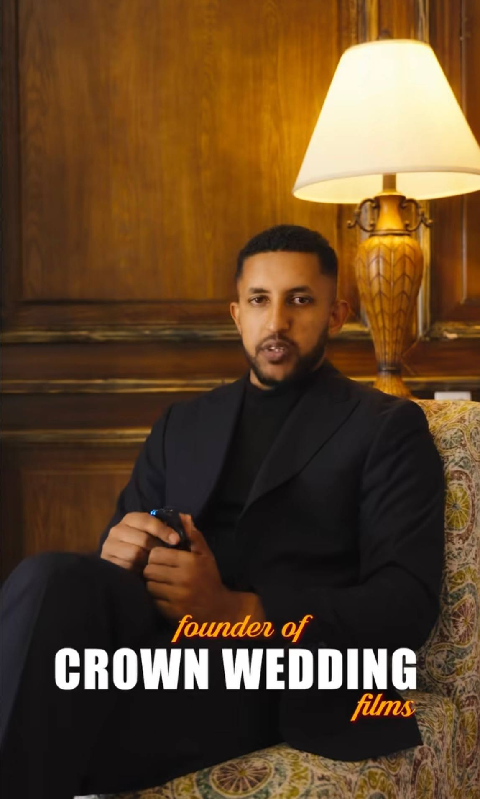

Our Story & Achievements
Cloud-based wedding photography and cinematic storytelling built on creativity, trust, and technology.
About the Company
Crown Wedding Films is a modern cloud photography studio that focuses on capturing emotional wedding moments and preserving them securely using cloud-based media workflows.
Crown Wedding Films is a professional wedding photography and cinematography studio based in Addis Ababa, Ethiopia. We specialize in documenting real emotions and meaningful moments through elegant photography and cinematic storytelling.
Our approach combines creativity with modern digital workflows, allowing us to preserve wedding memories in high quality while ensuring secure and easy access through cloud-based media solutions.
With a strong focus on detail, storytelling, and client satisfaction, we work closely with couples to create timeless visual narratives that reflect their unique love stories.
Co-Founder

Mintesnot Yeshanew is the co-founder and creative director of Crown Wedding Films. With a strong passion for visual storytelling and media innovation, he plays a key role in shaping the studios creative direction and brand identity.
His experience in photography, cinematography, and modern digital production has contributed to the development of a studio that blends artistic vision with advanced technology. Under his leadership, Crown Wedding Films continues to deliver high-quality wedding media with a strong emphasis on emotion, elegance, and professionalism.
Our Services
| Service | Description | Sample |
|---|---|---|
| Wedding Photography | Professional wedding photography focused on capturing natural emotions, candid moments, and timeless memories. |

|
| Wedding Films | Cinematic wedding films crafted with storytelling, creative angles, and professional editing techniques. |

|
| Engagement Sessions | Creative pre-wedding photo and video sessions designed to reflect the couples personality and connection. |

|